使用帮助
在这里找到您需要的一切，让创作之旅更加顺畅。
入门指南
基础操作
如何开始我的第一个项目？
- 在“项目中心”页面，使用“+点击开始创作”，新建项目，即可使用。
如何将我的文稿（剧本）直接转换为音频？
- 如果您已经有文稿，可以利用“文本转语音”（TTS）功能，将文字直接转换为音频。这是您进行播客或配音创作的快捷通道。
如何导入我自己的音频文件（如录音、音乐）？
- 如果您已经有录音文件，可以将音频文件拖拽到时间线上。或使用文件选择器。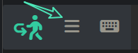 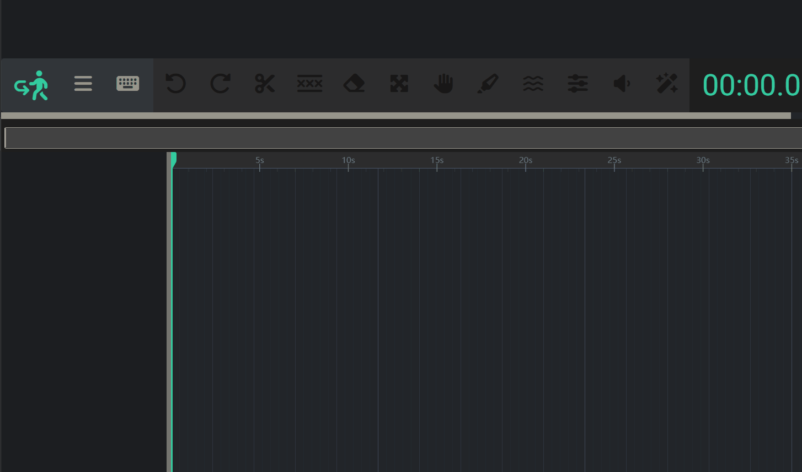
Umorsite 的界面是如何布局的？（左、中、右三个区域分别是什么功能？）
-
Umorsite 的界面设计直观，主要分为[ 左、中、右 ]三个核心区域，让您在创作时能高效地找到所需工具。这张图可以帮助您快速熟悉布局：
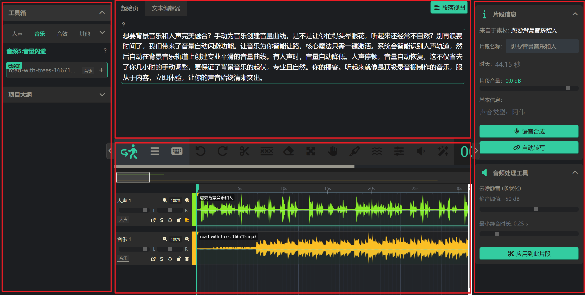
下面是每个区域的具体功能介绍：
1. 左侧：项目与资源区
这里是您项目的“控制中心”和“素材仓库”，所有创作资源都从这里开始。
- 工具箱： 快速访问核心AI功能的入口，例如“语音合成”、“语音识别”等。
- 素材库： 集中管理您项目中的所有人声、背景音乐和音效素材。您可以将这里的素材直接拖拽到中间的时间线上使用。
- 项目大纲： 以文稿列表的形式展示您的项目结构。点击大纲中的任何一段文字，都可以快速定位到时间线和文本编辑器中的相应位置。
2. 中间：核心编辑区
这是您的“主工作台”，分为上下两部分，实现了文本与音频的完美同步。
- 文本编辑器 (上方): 这里是您的“剧本”。我们最核心的“文稿剪辑”功能就在这里实现——文稿和音频的联动编辑就在这里，可以选择，分割，修改，替换都在这里完成
- 多轨时间线 (下方): 这是一个专业的多音轨视图。您可以在这里看到所有音频的波形，并通过拖拽、裁剪、分割等方式对音频进行精细操作。播放、暂停、调整时间等都在这里完成。
3. 右侧：检查器与工具区
这是一个“智能”的上下文面板，它的显示内容会根据您的当前操作而变化。
- 当您选中一个音频片段时： 这里会显示该片段的详细信息（如名称、音量），并提供针对性的工具，例如“重新合成”、“去除此片段的静音”等。
- 当您激活一个全局工具时： 如果您在时间线上方点击了“背景音乐闪避”之类的工具，这里就会显示该工具的详细参数设置。
- 当没有选择任何轨道上的音频时： 鼠标滑过工具栏，这里会显示工具的简要说明。 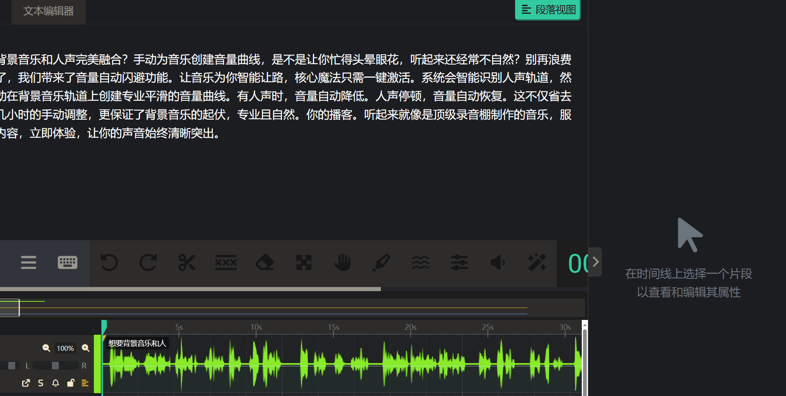
小贴士： 尝试在三个区域之间进行互动！例如，从左侧拖动素材到中间，然后在中间选中它，观察右侧面板的变化。这是熟悉工作流程最快的方式。
项目管理
项目是如何保存的？我需要手动点击“保存”吗？
- 需要您手动点击“保存项目”图标
如果我的浏览器意外关闭，我的工作会丢失吗？
您的所有工作都会被保存在浏览器中，无需担心关闭页面。但为了数据安全和跨设备使用，我们建议您：
- 命名项目： 为您的项目起一个明确的名称，方便在项目列表中查找。
- 定期导出备份： 您可以随时将整个项目导出为一个备份文件，以便在其他电脑上导入并继续工作。 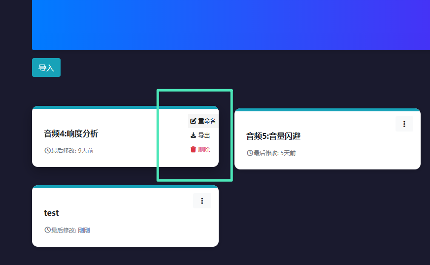
- 由于所有数据保存在浏览器当中，当您在浏览器执行“删除浏览数据”（ctrl+shift+del）操作时，不要勾选“Cookies及其他网站数据”，以确保您的项目数据安全。 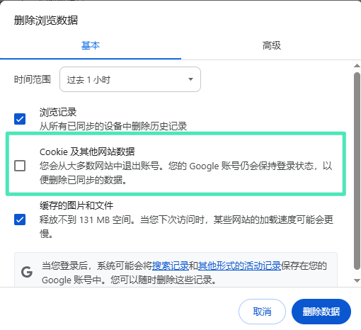
或者你可以先执行“导出项目”，再执行删除浏览数据操作。
小贴士： 请注意：项目与浏览器绑定。如果要跨设备编辑，请使用导出导入功能。目前无法直接云端同步。后期我们会逐渐加入这一功能。
如何管理我的素材库？可以给素材分类吗？
- 所有的文件都在素材库里显示，可以手动修改素材类型。不同类型的素材，使用时会被放入不同类型的轨道 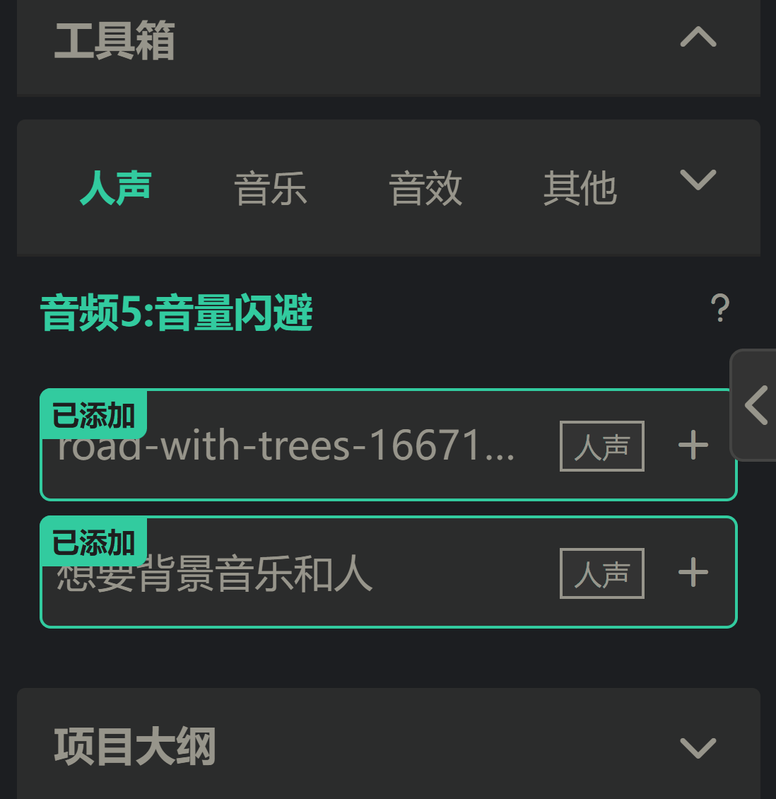
- 把音频添加到编辑区 、“删除”等操作，就在这里进行
核心概念
文本编辑器和音频时间线有什么关系？
- 您可以把文本编辑器想象成一个“智能脚本”，其中的每一个字都像被赋予了GPS定位一样，精准地与下方时间线上的对应声音波形关联。 理解这一点，您就能真正体验到应用的强大之处：点击文本可以直接定位到音频中的相应位置！ 这是实现“通过编辑文字来剪辑音频”的基础。
什么是“音轨”？
- 在音频编辑中，一个“音轨”就相当于一个独立的杯子。它是一个水平的、独立的通道，专门用来放置和管理某一类声音。
- 简单来说，音轨是您在时间线上放置音频片段的“泳道”或“图层”。
- 在 Umorsite 中，您会看到像“人声 1”、“音乐 1”这样的横向区域，这些就是音轨。您可以将您的口播音频放在“人声 1”音轨上，将背景音乐放在“音乐 1”音轨上。
为什么我需要多个音轨？
就像您不会把咖啡、牛奶和奶泡一开始就混在同一个杯子里一样，使用多个音轨是进行高质量音频编辑的基础。它为您带来了四大核心优势：
- 独立控制： 如果您的主持声音和背景音乐都在同一个音轨上，当您想把背景音乐的音量调低时，您的声音也会一起被调低，它们被“粘”在了一起。
- 声音叠加：您希望您的声音和背景音乐同时播放，而不是一个接一个地播放。
- 保持整洁与条理：当您的项目变得复杂时，拥有多个音轨能让您的工作区保持清晰。
- 编辑的灵活性：在不同的音轨上，您可以自由地移动、裁剪和排列音频片段，而不会意外地影响到其他声音。
核心编辑
文本驱动编辑
如何通过编辑文本来剪辑音频？
- 可以选择单个文字，定位到音频时间线上的相应位置。
- 可以任意分割文本，对应的音频也会被分割。
- 可以选中某句文本并删除，对应的音频部分也会被精准删除。
- 可以选择某局文本，重新进行语音合成，对应的音频也会被替换。 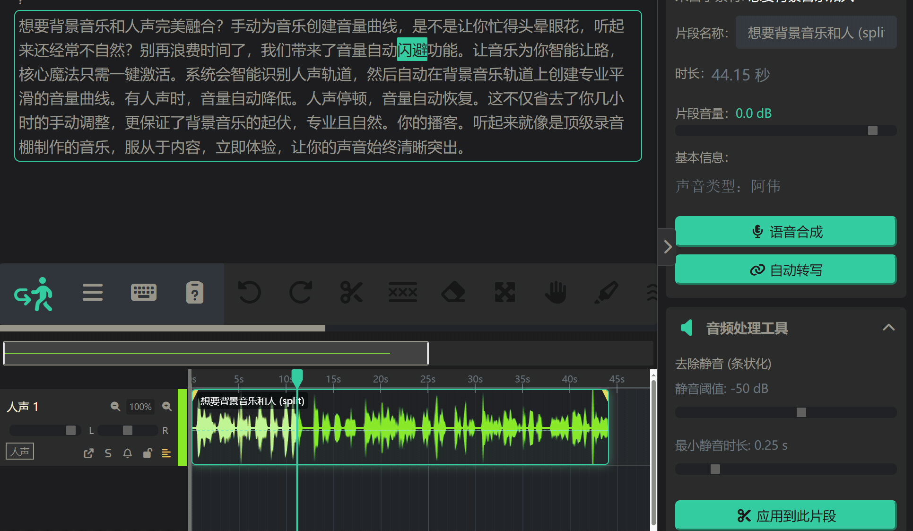
如何在文本中插入一段静音或停顿？
- 右键点击需要插入静音的位置 ，在弹出框里，输入静音时长。
语音识别出的文字有错误，如何修正？
- 选择需要修改的文字，在右侧面板的中，重新编辑即可，不过有限制：“校正错别字 (仅限修改，不能增删)”。
什么是“句子视图”？它和“段落视图”有什么不同？
时间线编辑
如何在时间线上移动和排列音频片段？
- 可以左右拖动音频，可以按alt+左键拖动复制，或者选中音频使用ctrl+c复制，ctrl+v粘贴。还可以跨轨道拖动或复制音频。 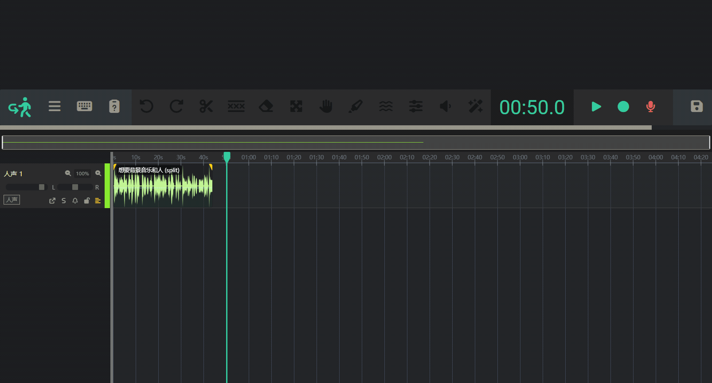
如何裁剪音频片段的开头或结尾 (Trim)？
- 按住音频片段边缘，可以调整音频长短。 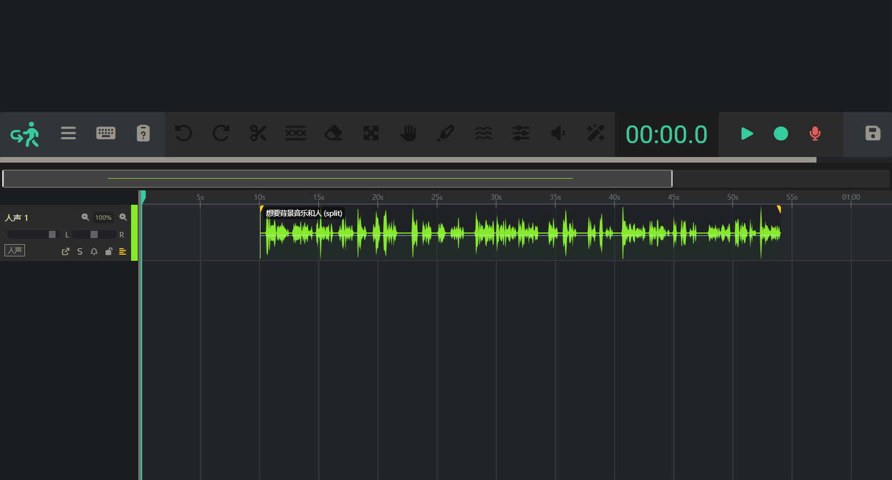
如何将一个长的音频片段从中间分割成两段 (Split)？
- 选中音频，按S键，在播放头位置分割。或使用"剃刀"工具R键，在任意位置分割。 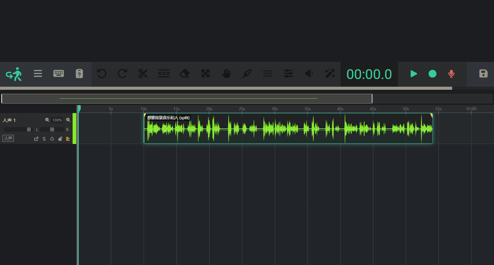
如何调整单个音频片段音量？
- 选中音频，在右侧面板会显示音频音量，即可调整，双击音量滑块可复位。或按ctrl+左键， 拖动音频中央的细线，即可上下拖动，调整音量。 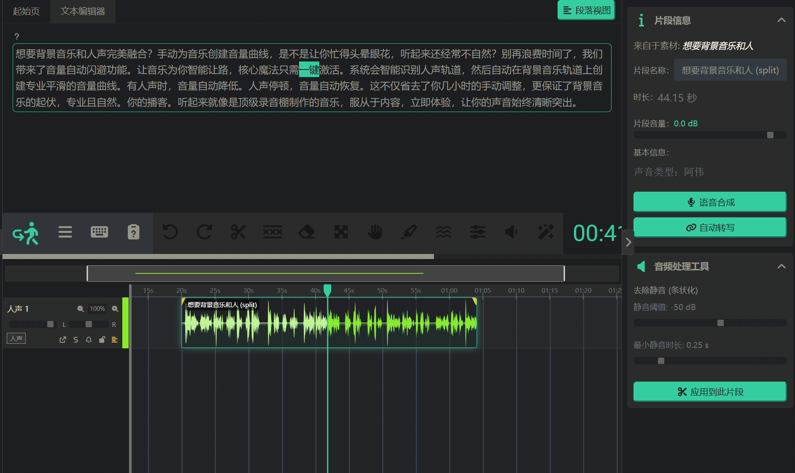
如何删除一个或多个音频片段？
- 选中一个或多个音频片段，按Del或Backspace键，删除。
如何为音频添加淡入和淡出效果？
- 点击音频片段，左上角和右上角的黄色三角，拖动，即可调整淡入和淡出。拖动范围越大，淡入和淡出效果越明显。 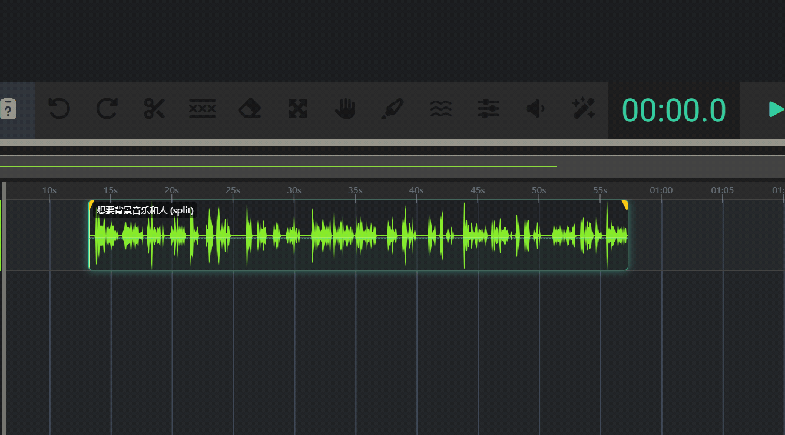
如何左右滚动和缩放时间线？
-
可以按ctrl+鼠标滚轮，缩放时间线。按alt+鼠标滚轮，左右滚动。还可使用时间线窗口来操作。


音轨操作
所有关于音轨的操作都在音轨面板
- 音轨面板位于时间线的右侧，显示当前音轨的名称、音量、音轨类型、立体声平衡等信息。 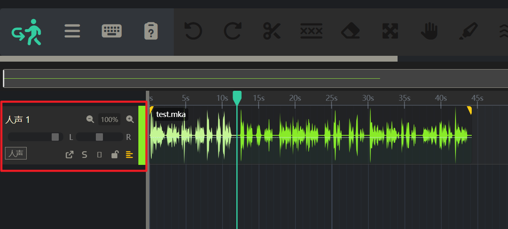
如何添加、重命名或删除音轨？
- 将音频片段，拖入一个新区域，即可新建一条新轨道。当轨道为空时，在素材库添加不同分类的素材，人声、音乐、音效，即可新建不同分类的轨道。 点击轨道面板，选中轨道，按按Del或Backspace键，即可删除轨道。在轨道面板可重命名和重选轨道分类。 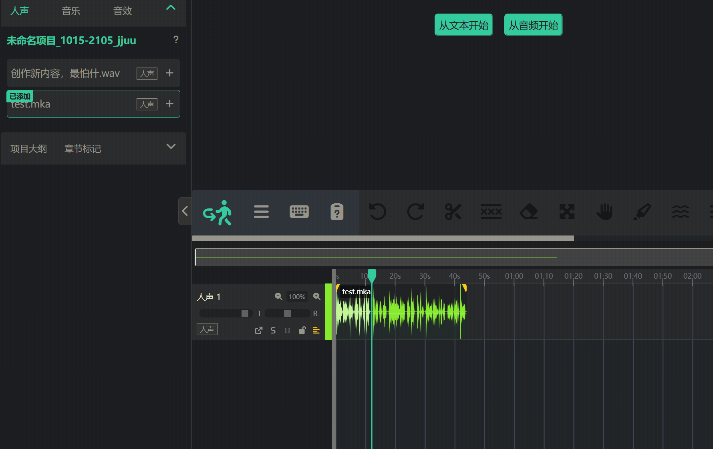
如何调整单个片段或整个轨道的音量？
- 在轨道面板,左右拖动滑块,即可调整轨道音量。双击滑块可复位。 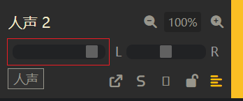
如何让声音在左声道或右声道播放 (声像 Pan)？
- 调整‘立体声平衡’ ，拖动滑块向左或者向右，即可实现左右声道播放。 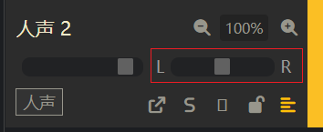
“静音 (Mute)”和“独奏 (Solo)”按钮有什么作用？
- 当点击轨道“静音”时， 整个轨道会静音。当点击轨道“独奏”，当前轨道保持播放，其他轨道会静音。
如何调整轨道音量曲线
- 在轨道面板，打开“轨道音量自动化面板”
高级模式
什么是“涟漪编辑 (Ripple Edit)”模式？它有什么用？
什么是“滑移 (Slip Edit)”工具？我应该在什么时候使用它？
高级工具
AI 语音功能
如何使用“语音合成”生成配音？可以更换不同的声音吗？
您可以将任意文本转换为高质量的配音，具体步骤如下：
- 在左侧面板的“工具箱”中，点击“语音合成”。
- 在弹出的窗口中，粘贴或输入您的文本。
- 从声音列表中选择您喜欢的音色，并可以调整语速、音调等参数。
- 点击“生成音频”，稍等片刻，生成的音频就会出现在您的素材库中，可以直接拖拽使用。
我可以用我自己的声音进行“声音克隆”吗？
如何使用“语音识别”为导入的音频自动生成文稿？
如何对选中的一小段文字进行“局部重新合成”？
音频处理
如何将音频中的人声和背景音乐分离开？
如何自动删除音频中所有长时间的静音部分 (Strip Silence)？
如何让背景音乐在人声出现时自动降低音量 (自动闪避/Auto Ducking)？
我的几段音频音量忽大忽小，如何让它们听起来响度一致 (响度标准化)？
导出项目
如何将我的项目导出为单个音频文件（如 MP3, WAV）？
当您完成所有编辑后，可以轻松地将整个项目导出为一个完整的音频文件。
- 在中间面板顶部的工具栏中，找到并点击“导出音频”按钮。
- 在弹出的对话框中，您可以选择导出的格式（如 MP3 或 WAV）以及音质。
- 点击“开始导出”，系统会在后台进行混音和渲染，完成后会自动触发浏览器下载。
我可以只导出项目中的某一个片段或某一个轨道吗？
如何导出 SRT 格式的字幕文件？
如何备份我的整个项目文件，以便在其他电脑上打开？
常见问题
Umorsite 支持哪些浏览器？
- 支持主流的 Google Chrome 或 MicrosoftEdge浏览器。
-
我们也支持最新版本的 Firefox 和 Safari，但部分高级功能可能会有兼容性差异。